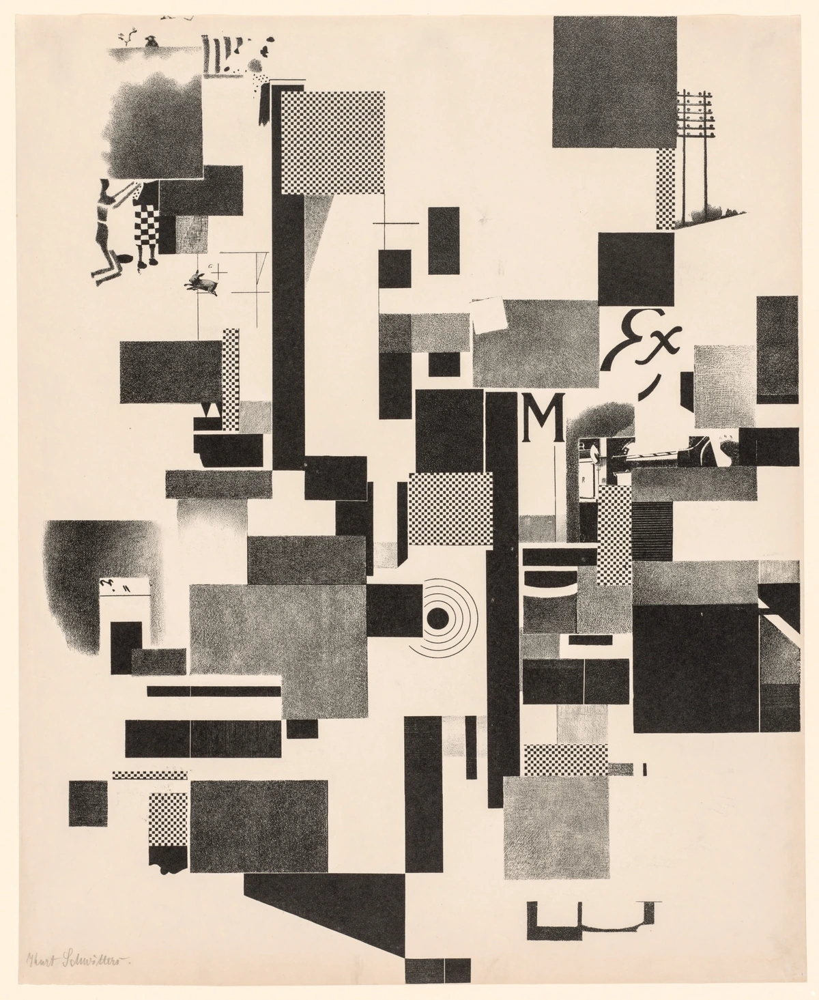
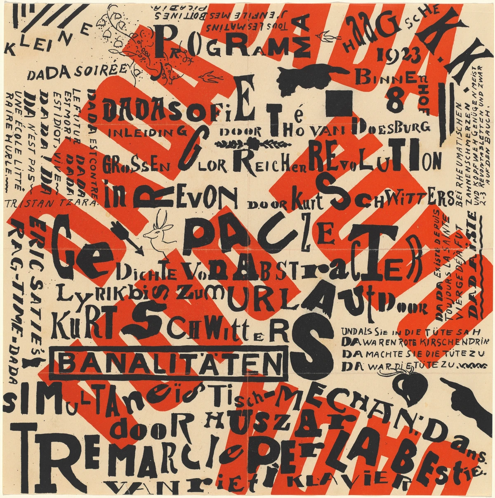
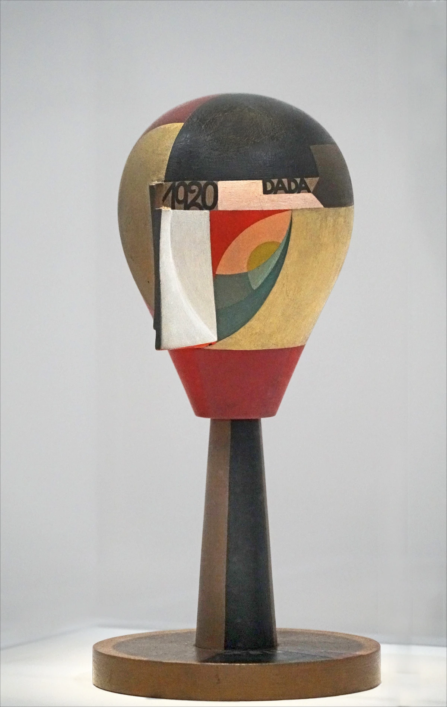

異なる印刷面を、隣り合わせる。
黒い矩形、細かな格子、粒状の灰色を組み合わせ、異なる印刷面の質感を対照させています。
本文試作・実作品画像3点収録 / 印刷・プログラム・木工の比較セット（解説・出典付き） · 2026-11-01
歴史・芸術／文学運動
Dada
店で売っている物を選ぶ。印刷された紙の切れはしを組み合わせる。
ダダの人々は、絵をかくだけではない方法で作品をつくりました。
言葉を使う催しや、手でつくる物もありました。
戦争が大きな被害をもたらす時代に、何を芸術と呼ぶのかを問い直した活動です。
LOOK AT THE WORK / 実作品を見る

画像を表示できませんでした。下の所蔵元リンクから作品を確認できます。
DADA / MERZ PRINT · 1923
Kurt Schwitters (1887–1948) / Cleveland Museum of Art
Cleveland Museum of Art所蔵1995.4、1923年の石版画。紙片を貼ったコラージュ現物の写真ではなく、紙片の像を石版へ転写した版画です。紙面全体と署名を含みます。
黒い矩形、細かな格子、粒状の灰色を組み合わせ、異なる印刷面の質感を対照させています。
大きな文字の断片や小さな図像は、元の広告や説明から切り離され、画面の形として配置されています。
所蔵記録の技法は石版画です。紙片そのものが貼られた現物と、紙片の印刷像を転写したこの版画を区別して読みます。
形・文字・配置の解説は掲載画像の観察です。MerzとDadaの関係、Molling印刷所での転写工程は所蔵館の個別解説に基づきます。
Kurt Schwitters, Merz 3 Portfolio: Plate 1, 1923. The Cleveland Museum of Art, Dudley P. Allen Fund, 1995.4. CC0.
所蔵元の個別作品記録 ↗原版画：館の個別Open Access対象。デジタル画像：当該APIのCC0指定。素材断片の作者は館記録に個別記載がなく、全地域の権利を一律に保証する趣旨ではありません。確認日 2026-11-01。
公式配信の原JPEGは無加工で保持し、拡大リンクから取得できます。ページ表示には縦横比と全画面を保った縮小WebPを使用（切り抜き・色補正なし）。原JPEGと各表示画像のサイズ・SHA-256を権利台帳に別記録。撮影者名は未確認のため推定しません。
美術館のOpen Access方針 / CC0 / 収録画像の権利台帳
所蔵館の個別公開指定とCC0方針に基づきます。全法域の権利保証や美術館の推奨を意味しません。
LOOK AT THE WORK / 実作品を見る

画像を表示できませんでした。下の所蔵元リンクから作品を確認できます。
DADA / POSTER & PROGRAM · 1922（NGA個別記録）
Theo van Doesburg / Kurt Schwitters / National Gallery of Art, Washington
NGA所蔵2010.124.1、制作年1922（館記録）、赤黒の石版ポスター・プログラム。紙面には1923の数字も見えます。MoMA178.1945とは別の所蔵個体で、NGA自身が公開する画像です。
赤い大きな文字形を斜めに走らせ、その上へ黒い語句を重ねています。赤と黒は同じ役割ではなく、遠くから見える面と、近くで読む情報の層を作ります。
文字の大小、向き、太さを混ぜ、指差しや矢印も加えています。一方向に順番に読むだけでなく、語句を拾いながら視線を行き来させます。
紙面には1923の数字が見えますが、NGAは所蔵個体の制作年を1922としています。告知物の制作年と催事の情報を混同せず、プログラムを上演そのものとも区別します。
色・文字・配置は掲載画像の観察。作者・制作年・媒体・所蔵個体はNGA記録に基づきます。所蔵年記と催事情報を混同せず、作品を実際の上演映像や録音とは扱いません。
Theo van Doesburg and Kurt Schwitters, Kleine Dada Soirée (Small Dada Evening), 1922. National Gallery of Art, Washington, Gift of the Collectors Committee, 2010.124.1. CC0.
所蔵元の個別作品記録 ↗原作品と当該media：NGA個別Public Domain表示。公開デジタル画像：NGAのCC0方針。確認日 2026-11-01。
公式配信の原JPEGは無加工で保持し、拡大リンクから取得できます。ページ表示には縦横比と全画面を保った縮小WebPを使用（切り抜き・色補正なし）。原JPEGと各表示画像のサイズ・SHA-256を権利台帳に別記録。撮影者名は未確認のため推定しません。
美術館のOpen Access方針 / CC0 / 収録画像の権利台帳
Institutional designation is not an unlimited guarantee for third-party rights in every jurisdiction; no endorsement.
LOOK AT THE WORK / 実作品を見る

画像を表示できませんでした。下の所蔵元リンクから作品を確認できます。
DADA / PAINTED WOOD · 1920
Sophie Taeuber-Arp / Centre Pompidou, Musée national d’art moderne, Paris
Centre Pompidou所蔵AM 2003-332、1920年。木に彩色・金属顔料。写真はJean-Pierre Dalbéraによる2021年の独立撮影で、頭・支持部・円形の台を含みます。MoMAのビーズ付き《Head》やPompidouの1918年の別個体ではありません。
丸みのある木の頭に、黒・金色・赤・白の面と曲線を配置しています。顔の各部を細かく写す代わりに、色と形の関係で立体を組み立てます。
額の部分には1920とDADAの文字が見えます。文字は外に置かれた説明だけでなく、彫刻そのものの表面を構成しています。
旋盤で形を作った木と彩色を組み合わせる作品です。館は、この時期の頭部作品や織物が、美術と応用芸術の序列を問い直したと説明しています。
色・形・文字は掲載写真の観察です。作者の生年1889は所蔵館の記録を採用し、写真説明の1883は転記しません。木工と美術の関係はPompidouの当該作品解説に基づきます。
Sophie Taeuber-Arp, Tête dada, 1920. Centre Pompidou, MNAM, AM 2003-332. 写真：Jean-Pierre Dalbéra「"Tête dada" de Sophie Taeuber-Arp (Centre Pompidou, Paris)」2021-08-13、CC BY 2.0。
写真：Jean-Pierre Dalbéra · CC BY 2.0 · 写真の元ページ。表示用に縮小・WebPへ再符号化（切り抜き・色補正なし）。
所蔵元の個別作品記録 ↗原作品：Pompidouの当該個体Domaine public表示。写真：Jean-Pierre Dalbéra、CC BY 2.0。所蔵館の有償配信写真の条件とは別です。確認日 2026-11-01。
配布された原JPEGを無加工で保持。表示用に縦横比を保って縮小・WebPへ再符号化しています（切り抜き・色補正・加筆なし）。写真の作者・題名・元ページ・CC BY 2.0リンクと変更表示を維持。
写真の再利用条件 / CC BY 2.0 / 収録画像の権利台帳
原作品の館によるPD判断と、独立写真のCC BY 2.0を分けています。写真の権利をCC0とは表示せず、作者・撮影者・館の推奨を意味しません。適用地域の第三者権利に留意します。
作品の知名度や画像の入手しやすさだけで選びません。紹介したい作品と、調べて分かったことをまとめました。画像を載せられるかどうかは、別に確かめています。画像の利用許諾を確認できていないものは掲載していません。
役割の違う実画像3点を、最初の比較セットとして収録しました。印刷物の断片を写し取ったMerzの石版画、催しのポスター・プログラム、色をつけた木の頭部彫刻です。目標の3〜5点のうち、最低数の3点に達しています。ただし、すべての地域、上演、レディメイド（既製品を作品として提示する方法）などをカバーするものではありません。1930年に活動が続いた例と、1951年につくり直した例は、運動が生まれた時期の原物とは区別し、候補欄に残しています。
自転車の車輪と腰かけを組み合わせた作品です。
すでにある物を選ぶことも、作品づくりになるのでしょうか。
既製品・立体
車輪と腰掛けを組み合わせ、物を選び、組み合わせることを作品にした例です。最初の物を保存することに加え、考え方を別の物で作り直すと何が起こるかを考えます。
1913年のパリの原作は残っていません。MoMAの個体は、1951年のニューヨークの展覧会のために作り直されたものです。原作の写真とは区別します。「レディメイド」という言葉を使い始めた年は、館内の記述に違いがあるため断定しません。
音楽、詩、人前で話す催しを知らせるポスターです。
いくつもの言語が使われています。
グラフィック・催事プログラム
いくつもの言語を使ったポスターに、サティの音楽、シュヴィッタースの詩、ドゥースブルフの講話が並びます。文字の見せ方だけでなく、上演へ人を誘う役割を比べます。
掲載個体はNGA2010.124.1です。赤と黒の石版によるポスター・プログラムで、紙は30.16×30.16cmです。紙面には1923が見えますが、館が記録する制作年1922を勝手に変えません。MoMA178.1945の画像は転用していません。プログラムは、実際の上演や録音そのものではありません。
木を回しながら削る機械でつくった部品に、ビーズを組み合わせています。
ダダは、紙を切って貼る作品だけではありません。
工芸・彫刻
旋盤（せんばん、材料を回転させながら削る機械）で加工した木の部品に、ビーズの飾りを組み合わせています。工芸と美術の境目を問い直す例です。ダダを紙の切り貼りだけで説明しないための候補です。
木に油絵具を使い、針金にガラスビーズを通しています。高さは23.5cmです。館が述べる「自画像かもしれない」という見方は解釈です。特定の人物を描いた肖像と確定したものではありません。
作品の内容を説明する見出し
原題：Indian Dancer: From an Ethnographic Museum
印刷された絵などと、薄い金属を切って貼った作品です。
元からある物の見え方を、組み合わせによって変えています。
フォトモンタージュ・コラージュ／後年の継続例
印刷された像と金属箔（きんぞくはく、薄く延ばした金属）を切り貼りした作品です。メディアの断片を組み直す制作が、後の時代も続いたことを見ます。既製品や木の立体作品とは、別の役割として比べます。
紙に印刷紙と金属箔を使い、25.7×22.4cmです。歴史的に館が用いてきた題名をそのまま記載しています。題名だけで、描かれた人物の出身や文化は決めません。素材になった写真の撮影者は未確認です。運動が生まれた時期の原物ではありません。
作品の内容を説明する見出し
原題：Merz 3 Portfolio: Plate 1
紙片の姿を、石の版へ移してつくった作品です。
すでに印刷された物を、もう一度組み直しています。
印刷物の断片・Merzの石版画
所蔵館はMerzをダダの一つの形として説明しています。紙片の像を石版へ移す制作方法も、具体的に記しています。既製品やプログラムと比べ、すでにある印刷物を組み直す役割を見ます。
技法は石版画です。別の紙を実際に貼り付けたコラージュの現物とは区別します。材料にした各断片の作者は、記録から特定できていません。
木の頭に、色や図形を組み合わせています。
額には「DADA」と、つくられた年がかかれています。
木工・彩色彫刻／美術と応用芸術
額にDADAと制作年を記し、木工や彩色と、図形を組み合わせた顔を結びつけた作品です。館は、この時期の頭部彫刻と織物を、美術と応用芸術に上下をつける考えを問い直す実践として説明しています。
29.43cm、直径14cmです。木に彩色し、金属顔料を使っています。MoMA253.2003のビーズ付き《Head》や、Pompidou1918AM1692Sとは別の個体です。写真に付いていた生年の誤記は、館が示す1889に訂正して記録しています。
店で売っている物や、印刷物の切れ端も、芸術になるのでしょうか。ダダは、戦争の大きな被害や、メディア・機械が広がる社会に応える形で展開した、芸術と文学の運動です。既製品、印刷物、言葉、上演、手工芸を使い、何を芸術と呼ぶのかを問い直しました。
「乱れた文字」や「切り貼り」という見た目だけでは、ダダを捉えきれません。ここでは、物を選ぶこと、催しの告知と上演、工芸と彫刻、後年のフォトモンタージュ（写真を組み合わせて作る表現）という、違う役割を比べます。すべての都市の活動を、一つの思想や様式にまとめるものではありません。
シュヴィッタース（Schwitters）の「メルツ（Merz）」では、都市の印刷物の断片を集め、文字や絵を元の使い道から移す試みが行われました。所蔵館は、掲載している1923年の石版画を、そうした紙片の姿を版に移した作品と説明しています。
以下は観察のための問いです。すべての作品に共通する固定ルールや、未取得画像の実見結果ではありません。
ダダに固有の配色は決めません。紙、印刷、金属箔（きんぞくはく：薄くのばした金属）、木、ビーズなど、材料と色の関係から見ます。
複数の言語を使うプログラムには、何が並んでいるでしょうか。文字が情報を伝えると同時に、表現としてどう働くかを見ます。《Kleine Dada Soirée》は、音楽・詩・講話をまとめて知らせる印刷物として読みます。
既製品を選び直すこと、紙に印刷された姿を版へ移すこと、木を加工して色を付けることは、それぞれ違う制作です。掲載した木の頭と、まだ掲載していない候補の木・ビーズの頭は、同じ作品ではありません。
もともとあった断片が、元の使い道や意味から、どう移されたかを考えます。無秩序に見えても、それだけで「偶然に任せて作った」とは判断できません。
COMPARE
デ・ステイル（De Stijl）にも関わったファン・ドゥースブルフは、ダダの催しにも協力しました。ただし、それは両者が同じ様式だった証拠ではありません。未来派とは、文字や上演を扱う点で比べられますが、政治的立場や歴史上の目的まで同じには扱いません。掲載の3点では、平面の印刷と立体の木工を比べられます。また、情報を伝えるプログラムと、物の姿を作り替える表現の違いにも注目できます。
項目を横に並べる ↗READ TODAY
ヘーヒの1930年の作品は、活動が続いたことを示します。一方、デュシャンの1951年の再制作は、物としての作品を改めて作った例です。この二つは、時間との関わり方が違います。現代のコラージュ（材料を貼り合わせる表現）やリミックスと似ていても、見た目だけで直接の影響関係は断定しません。
このページを書くときに使った資料です。作品の説明、画像を入手できたかどうか、画像を使う条件は、それぞれ別に確かめています。検索結果で読んだ情報と、元のページを開いて確かめた情報も、調査の記録で分けています。
この項目の収録実画像：3点（一覧に登録した項目の合計：31点）。参照・関連実作品はこの項目0点（図鑑全体2点）。代表作品画像セットの数には含めません。
.jpg){kind=link}